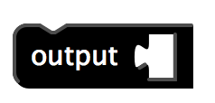
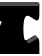
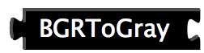
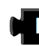
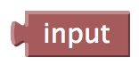
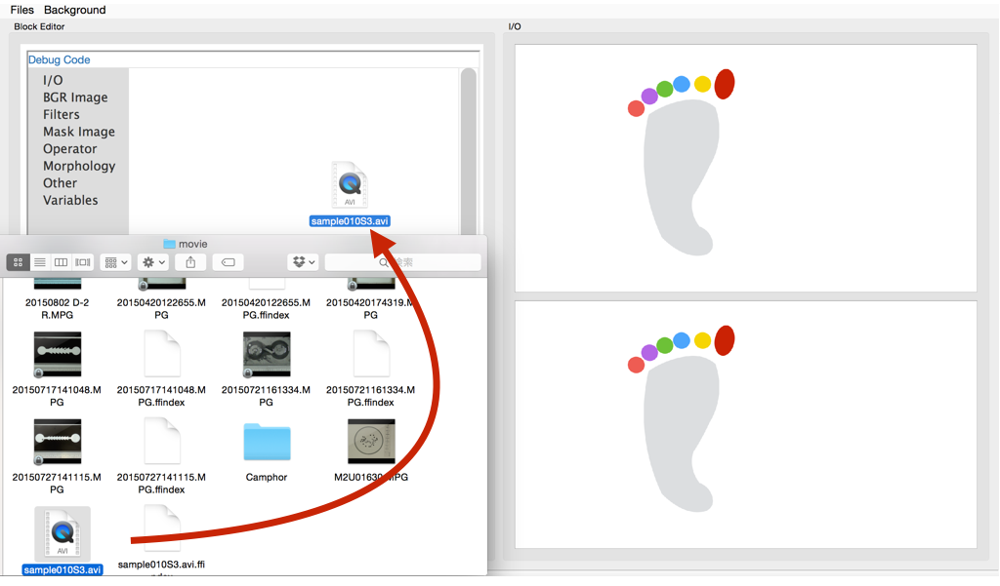
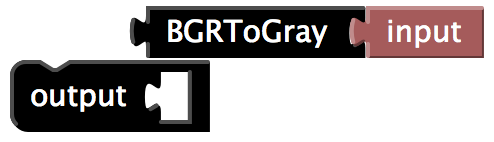
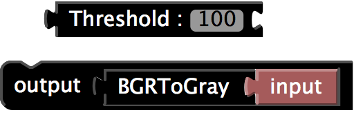

UMATracker Manual
FilterGeneratorの使いかた
FilterGeneratorでは、位置座標を抽出したい物体の場所が白くなる動画フィルタを作成することが目標です。下の画像のように、"フィルタをかけた後の画像"で白い場所は、"元の動画"でアリのいた場所です。この様な画像になるまで、フィルタを変化させていきます。
FilterGeneratorの画面
UMATracker-FilterGeneratorを起動すると下記の画面が現れる。主要な機能について説明する。
- フィルタツールチップ
- フィルタブロック
- キャンバス
- 入力した画像
- フィルタを掛けた後の画像
フィルタブロックの一覧が表示されるツールチップ。フィルタブロックは入力画像を変化させるフィルタのことです。 ブロック毎に入力画像に与える効果は変化します。
このブロックをドラッグアンドドロップし、キャンバスに配置することでフィルタ群を作成する。
フィルタブロックを配置し、フィルタ群を作成する場所。
読み込ませた動画が表示される。FilterGeneratorを起動した直後には、足の模様が表示される。
キャンバスに設置したフィルタ群を入力した動画に適応した結果が表示される。
フィルタブロック
フィルタブロックは大別すると３つに分ることができる。入力ブロック、入力／出力ブロック、出力ブロック。これら3つを組合せることでフィルタ群を構成する。
- 入力ブロック
- 入力／出力ブロック
- 出力ブロック

またはのかたちのついたブロックを入力ブロックと呼びます。
入力のみを受け付けるフィルタです。出力はありません。
例えば、"Output","Variable"ブロックなどが入力ブロックに当る。

とのかたちのついたブロックを入力／出力ブロックと呼びます。
入力と出力の両方を供えたブロックです。入力ブロックにフィルタをかけた物を出力します。

のかたちのついたブロックを出力ブロックと呼びます。
出力のみを行うブロックです。
I/O -> Input、Mask Image -> "Circle"ブロック、Mask Image->"Rectangle"ブロック等のことです。
フィルタブロックの側に並んだブロックをInフィルタ、側に続くブロックをOutフィルタと呼ぶ。
フィルタブロック例
- Inputブロック
- BGRToGrayブロック
- Color Inversionブロック
- Outputブロック
InputブロックはFilterGeneratorに読み込ませた動画像を出力するブロックです。
入力には、カラー画像を、出力は、GrayScale画像を出力します。 カラー画像をGrayScale画像に変換するフィルタです。明るい場所を白に、黒い場所を黒色というふうに、白色から黒色までの明暗のみで画像を表現します。
入力には、GrayScale画像を、出力は、GrayScale画像です。 白い色を黒に、黒い色を白い色に変換します。
入力のみを受け付けるブロック。受け取った入力を"フィルタを掛けた後の画像"に出力する。
動画を読み込む
まず、動画ファイルを読み込みます。動画のファイルをFilterGeneratorにドラッグ&ドロップする。
動画ファイルが読み込まれ、"入力した画像"が変化します。
キャンバス(フィルタ群の作りかた)
キャンバスにフィルタ群を作る。フィルタツールチップ内のフィルタブロックをinputとoutputの間にドラッグアンドドロップすることで、フィルタ群が作れる。

起動時には、OutputブロックとInputブロックのみが表示される。inputはソフトウェアに読み込ませた動画像のことをさしている。inputブロックはこの動画像を出力するフィルタである。Outputブロックには、フィルタ操作を行ったフィルタ群を入力する。こうすることで、フィルタを付けた変化が"フィルタを掛けた後の画像"に表示される。 起動時の"フィルタを掛けた後の画像"は、キャンバスにInputブロックがOutputブロックに接続されているので、動画ファイルの内容そのもの(無加工)の画像が表示される。
キャンバスには、OutputブロックとInputブロックが必須となる。これらのブロックはフィルタツールチップの"I/O"の中に入っている。
フィルタの作りかた
フィルタ群例
- Inputブロックは入力した画像のこと
- Inputブロックからは入力した画像が出力される
- BGRToGrayブロックから出力された画像がOutputブロックに入力される
- Outputブロックに入力された画像が"フィルタを掛けた後の画像"に表示される
Inputブロックは入力した画像／動画像のこと。
Inputブロックからは入力した画像が出力される。それを受けたBGRToGrayブロックは、入力画像を黒白にする処理をかけた画像を出力する。
GrayScale画像になった結果が出力される。
この例では、GrayScale画像になった入力画像が入力される。つまり、"フィルタを掛けた後の画像"は、入力した動画像がGrayScale画像になっている。 Outputブロックがキャンバスに存在しない場合、"フィルタを掛けた後の画像"には正しい結果が表示されない。
フィルタブロックの削除方法
不要になったフィルタブロックを削除するには、"フィルタツールチップ"または、"キャンバス"にあるゴミ箱にフィルタブロックをドラッグ&ドロップすれば良い。"Inフィルタ"と繋った状況でも複数のフィルタブロックを削除できる。
エラーが起きる場合
- Outputブロックと他のブロックが離れている場合。
- 他のブロックと繋っていないフィルタブロックがある場合


FilterGeneratorがあつかう画像の種類
FilterGeneratorでは3つの画像を扱うことができる。言い替えれば、フィルタブロックにはそれぞれの種類の画像を出力する。
- カラー画像
- GrayScale画像
- 黒白画像
カラー画像は、RGB三色で表現された画像のこと。Inputブロックは、カラー画像を出力するブロック。
カラー画像を白いろから黒色までの明暗のみで表現した画像。BGTRoGrayブロックを使うことで、カラー画像からGrayScale画像に変換できる。
GrayScale画像を黒色と白色のみで表現した画像。 最終的なOutputは黒白画像であることが必須。 位置座標を抽出したい物体の場所が白くなるように調整を行う。
カラー画像から、GrayScale画像に変換。最終的に黒白画像になるようにフィルタを調整する。